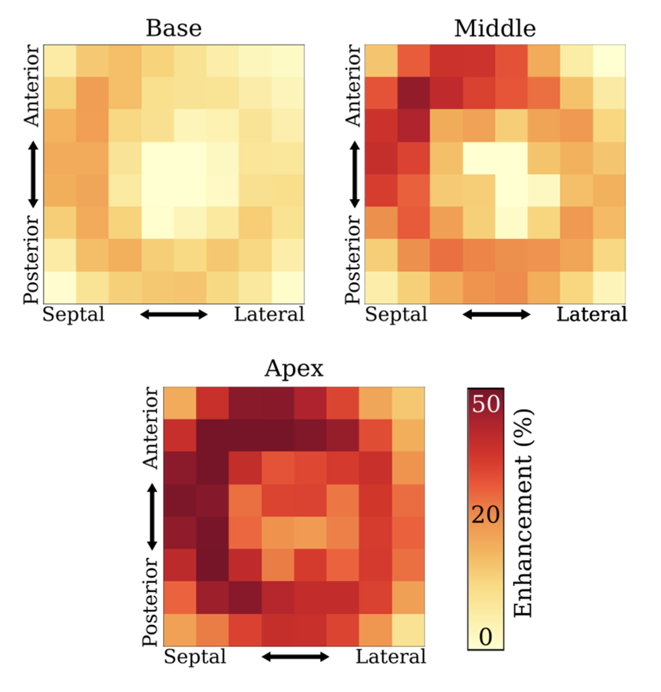
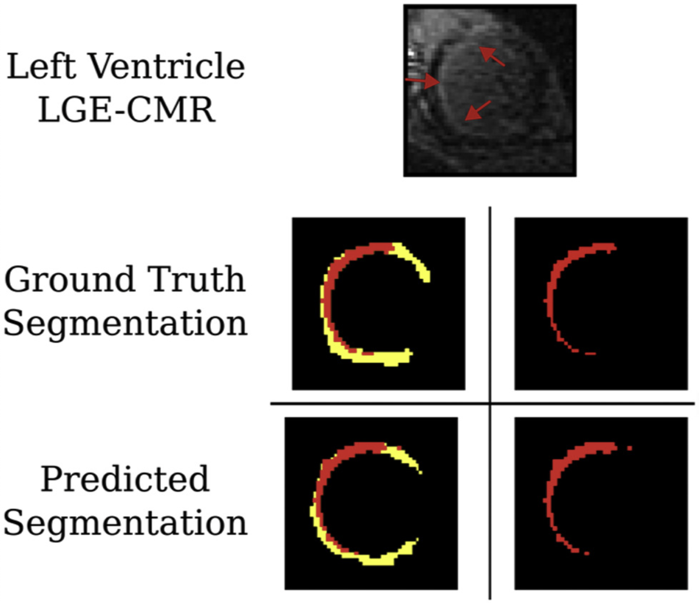
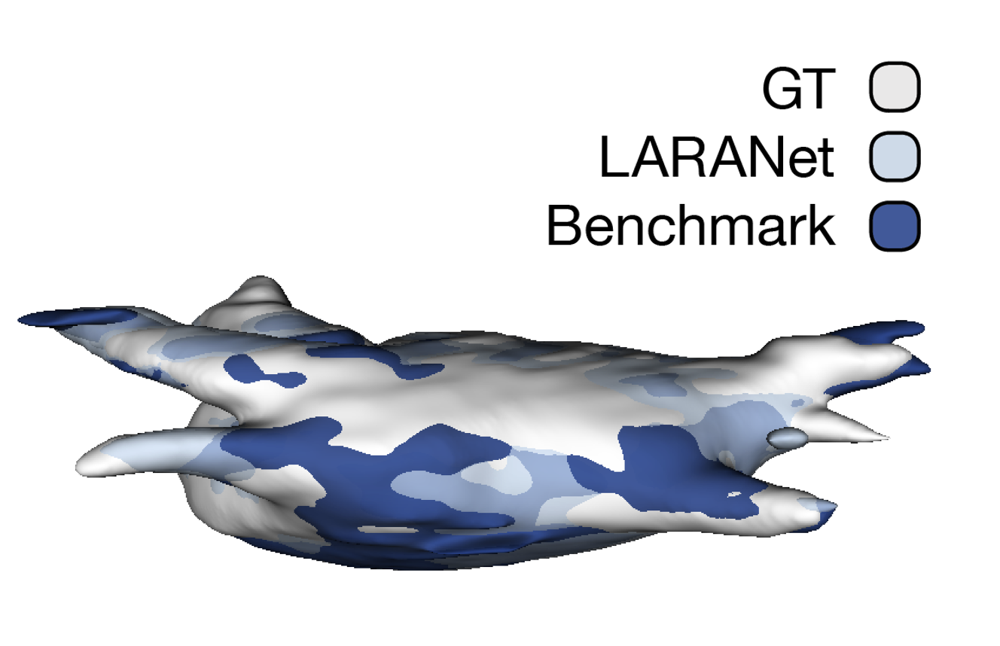
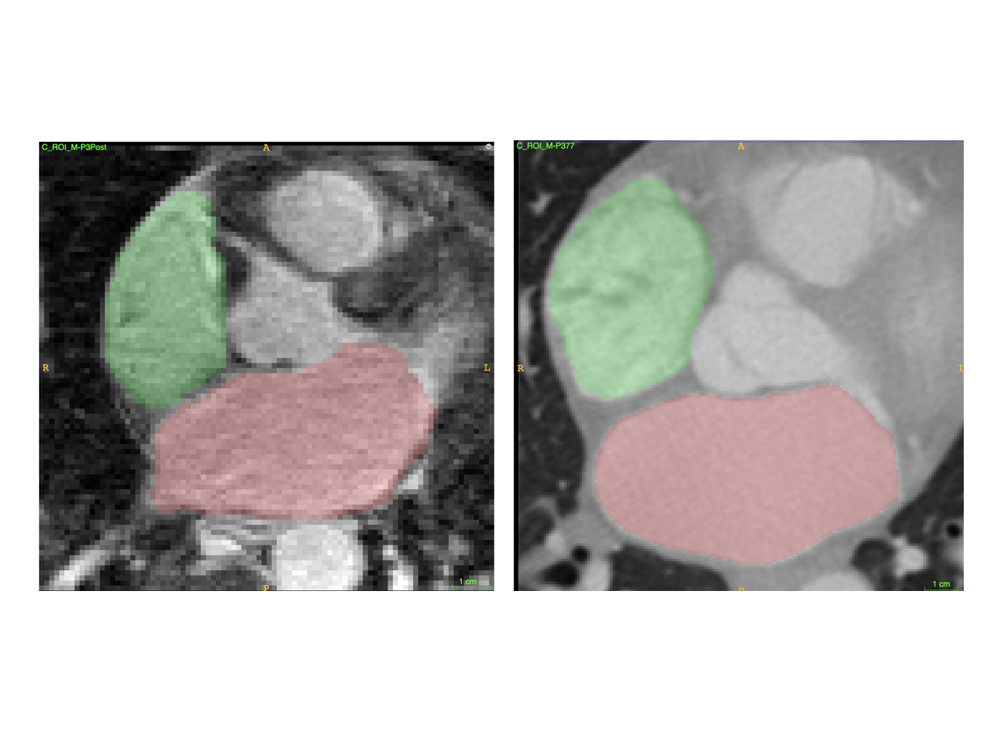
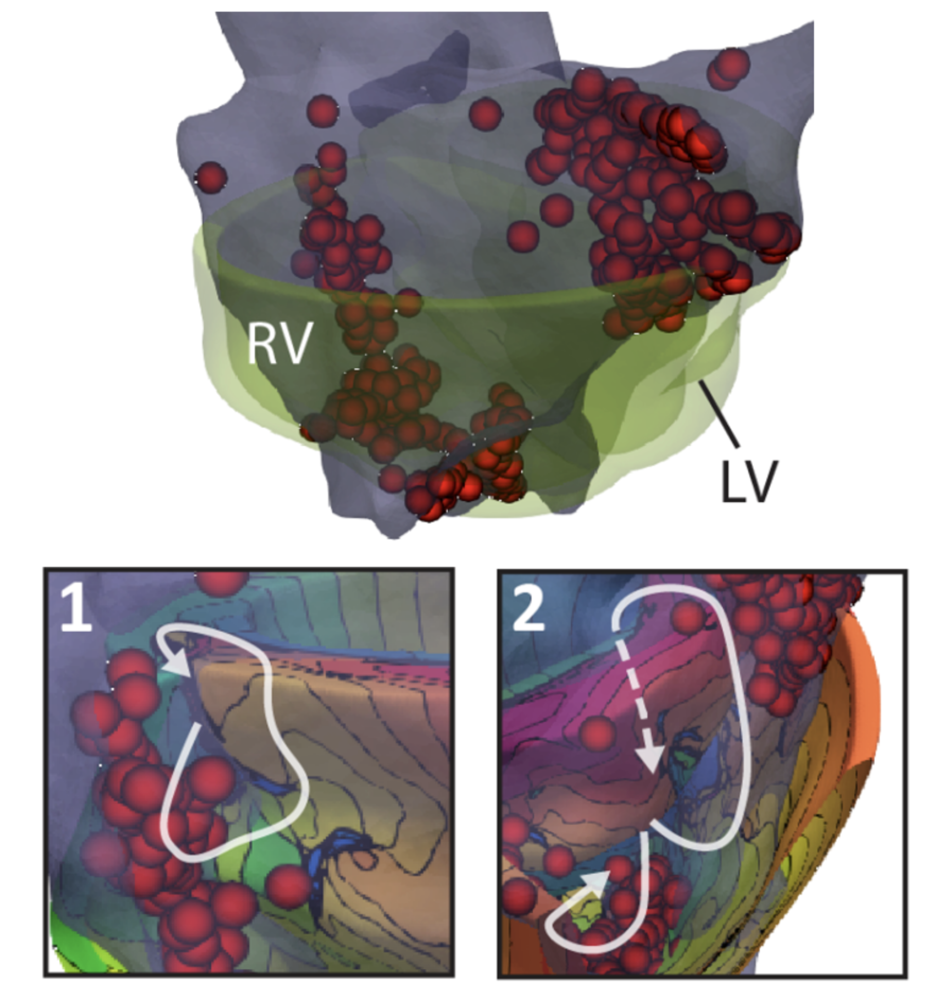

|
I am a first year Ph.D. student in the Machine Learning Department at Carnegie Mellon University. Previously, I obtained my B.S. in Biomedical Engineering and Computer Science from Johns Hopkins University, where I worked in the Trayanova Lab mentored by Rheeda Ali and in the Johns Hopkins Center for Computational Biology advised by Mihaela Pertea.
email:
|

|
|
I am broadly interested in understanding (and improving) human-AI decision making while considering the social and ethical implications of machine learning in high impact problem domains. |
|


|
Dan M. Popescu, Haley G. Abramson, Rebecca Yu, Changxin Lai, Julie K. Shade, Katherine C. Wu, Mario Maggioni, Natalia A. Trayanova Cardiovascular digital health journal 3(1), 2022 We developed a novel deep learning solution for analysis of contrast-enhanced cardiac magnetic resonance (CMR) images that produces anatomically accurate myocardium and scar/fibrosis ssegmentations and uses these to calculate clinical features of interest. pdf / journal article |
|


|
Rebecca Yu, Rheeda L. Ali, Pallavi Pandey, Ryan P. Bradley, David D. Spragg, Hugh G. Calkins, Natalia A. Trayanova Biomedical Engineering Society (BMES) Annual Conference, 2020 Heart Rhythm Society (HRS) Scientific Sessions, 2021 (Oral Presentation) Variable atrial anatomy and thin atrial walls, compounded with poor and inconsistent image quality, lead to low generalizability in segmentation neural networks. We developed a two-stage 3D neural network that is able to accurately delineate both the left and right atria in under 5 seconds for multi-modal clinical cardiac imaging. poster / presentation with animations (pptx) / presentation without animations (pdf) |
|


|
Julie K. Shade, Adityo Prakosa, Dan M. Popescu, Rebecca Yu, David R. Okada, Jonathan Chrispin, Natalia A. Trayanova Science Advances 7(31), 2021 Cardiac sarcoidosis (CS), an inflammatory disease characterized by formation of granulomas in the heart, is associated with high risk of sudden cardiac death (SCD) from ventricular arrhythmias. Current “one-size-fits-all” guidelines for SCD risk assessment in CS result in insufficient appropriate primary prevention. We present a two-step precision risk prediction technology for patients with CS. In a retrospective study of 45 patients, the technology outperformed clinical metrics, highlighting its potential to transform CS risk stratification. pdf / journal article |
|
|
| EN.601.229 Computer Systems Fundamentals |
Head TA: Spring 2021, Fall 2020
TA: Spring 2020 |
| EN.500.113 Gateway Programming: Java | Summer 2021 |
| EN.580.242 Biological Models and Simulations | Spring 2021 |
| EN.580.477 Biomedical Data Science Laboratory | Fall 2020 |
| EN.580.485 Compuational Medicine: Cardiology | Fall 2020 |
| EN.601.220 Intermediate Programming | Summer 2020, Fall 2019 |
| AS.171.102 General Physics: Physical Science Major II | Spring 2020 |
| AS.171.101 General Physics: Physical Science Major I | Fall 2019 |
|
|
| Co-founder of Women Mentoring Whiting (see press coverage here) |